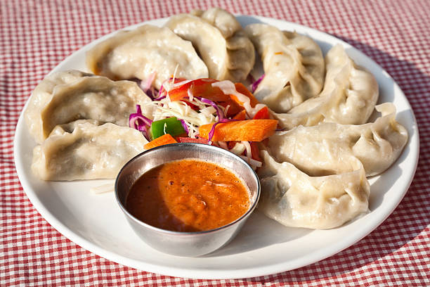

Momo

Description
Momos are a type of steamed filled dumpling in Tibetan and Nepali cuisine that is also popular in neighbouring Bhutan and India. Momos are usually served with a sauce known as achar influenced by the spices and herbs used within many South Asian cuisines.
Ingredients
- flour
- red meat
- salt
- oil
- cabbage
Steps in making momos
- finely cut vegetables
- add flour oil and salt and mix in a bowl
- cut the flour and stuff with fillings
- wrap and steam them
- serve with chili oil and momo sauce
Return to home